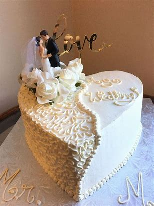

A wedding cake is the traditional cake served at wedding receptions following dinner. In some parts of England, the wedding cake is served at a wedding breakfast; the 'wedding breakfast' does not mean the meal will be held in the morning, but at a time following the ceremony on the same day. In modern Western culture, the cake is usually on display and served to guests at the reception. Traditionally, wedding cakes were made to bring good luck to all guests and the couple. Nowadays, however, they are more of a centerpiece to the wedding and are not always even served to the guests. Some cakes are built with only a single edible tier for the bride and groom to share, but this is rare since the cost difference between fake and real tiers is minimal.
Wedding cakes come in a variety of sizes, depending on the number of guests the cake will serve. Modern pastry chefs and cake designers use various ingredients and tools to create a cake that usually reflects the personalities of the couple. Marzipan, fondant, gum paste, buttercream, and chocolate are among the popular ingredients used. Cakes range in price along with size and components. Cakes are usually priced on a per-person, or per-slice, basis.[1] Prices can range from a few dollars to a few hundred dollars per-person or slice, depending on the pastry chef who is hired to make the cake. Wedding cakes and cake decorating in general have become a certain pop culture symbol in western society. In the United States, reality television shows such as Cake Boss and Amazing Wedding Cakes have become popular and are trending in today's popular culture.
The first wedding cakes were probably made in ancient Greece. Ronald Reagan and Nancy Reagan cutting their wedding cake, 1952 The contemporary wedding cake has grown out of several different ethnic traditions. One of the first traditions began in Ancient Rome, where a cake of wheat or barley was broken over the bride's head to bring good fortune to the couple.

During the 16th century to the 17th century, the "bride's pie" was served at most weddings. Different from the modern sweet wedding cake, bride pie is savoury. Bride pie is a pie with pastry crust and filled an assortment of oysters, lamb testicles, pine kernels, and cocks' combs (from Robert May's 1685 recipe). For May's recipe, there is a compartment of bride pie which is filled with live birds or a snake for the guests to pass the time in a wedding when they cut up the pie at the table.[4] Guests were expected to have a piece out of politeness. It was considered very rude and bad luck not to eat the bride's pie. One tradition of bride's pie was to place a glass ring in the middle of the dessert and the maiden who found it would be the next to marry, similar to the modern tradition of catching the flower bouquet.